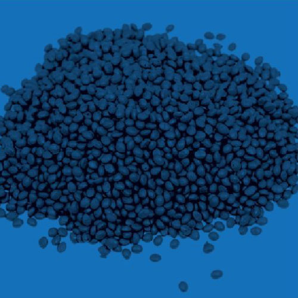
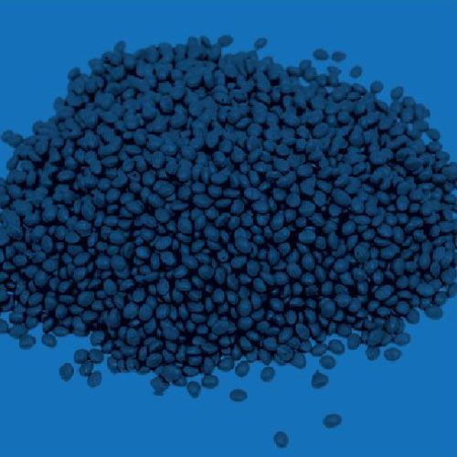
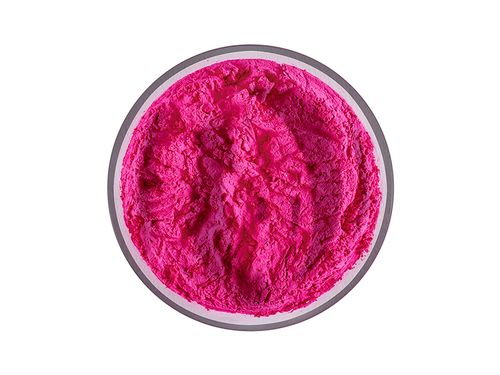
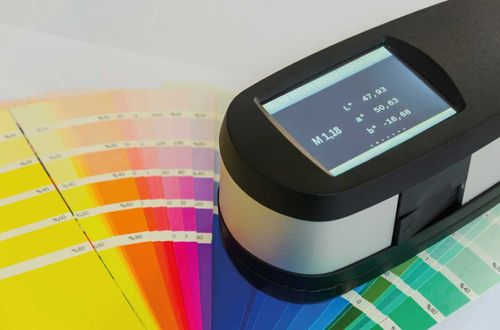

Pigmentos opacos
Se usan cuando la pieza necesita cobertura visual, color sólido o reducción de transparencia.
AGAMA comercializa pigmentos opacos y pigmentos cristal para transformar color en piezas plásticas. La recomendación se revisa por resina, proceso, aplicación, dispersión, opacidad o transparencia esperada.

Un pigmento aporta color directamente a una resina o formulación plástica. Puede utilizarse para cubrir una base, conservar transparencia, igualar una muestra o ajustar apariencia en piezas producidas por inyección, extrusión o soplado.
La decisión no debería tomarse solo por nombre de color. Para evitar variaciones, conviene revisar compatibilidad, dosificación, dispersión y condiciones reales de transformación.
La primera separación útil suele estar entre cobertura y transparencia. Después se revisan resina, proceso, carga, temperatura y resultado visual esperado.
Se usan cuando la pieza necesita cobertura visual, color sólido o reducción de transparencia.
Permiten trabajar efectos transparentes o translúcidos cuando la resina y el espesor lo permiten.
Parte de una muestra o tono objetivo para orientar pruebas y mantener consistencia visual.
Estas imágenes quedan visibles en HTML con nombres y textos alternativos descriptivos para que Google pueda asociarlas a pigmentos para plástico, opacidad, coloración e igualación de color.



Confirmamos si trabajas con PE, PP, PVC, estirénicos u otra familia plástica.
La dispersión y estabilidad pueden cambiar entre inyección, extrusión y soplado.
No se evalúa igual una pieza opaca, una pieza cristal, una película o una muestra de aprobación.
Comparte resina, proceso, aplicación, color requerido o muestra física, acabado esperado y volumen estimado. Con esos datos AGAMA puede orientar mejor la compatibilidad antes de pasar a precio.
Los pigmentos se seleccionan con el proceso en mente. Cada enlace lleva al catálogo para revisar opciones disponibles.
Controlar: dispersión, tono, apariencia superficial y estabilidad térmica.
Ver pigmentos para inyecciónControlar: consistencia visual, carga, compatibilidad y producción continua.
Ver pigmentos para extrusiónControlar: cobertura, espesor, resina y variación visible en envases o piezas huecas.
Ver pigmentos para sopladoSi ya tienes claro el tono, entra al catálogo. Si estás comparando pigmento opaco, cristal o una igualación, solicita asesoría con tu muestra.
Para cobertura, piezas sólidas y reducción de transparencia.
Ver pigmentos opacosPara piezas translúcidas cuando la resina y el espesor lo permiten.
Ver pigmentos cristalPara igualar tono o validar compatibilidad antes de una prueba.
Solicitar asesoríaTres piezas permanentes para entender mejor pigmento, masterbatch y comportamiento del color en plástico.
Sí. AGAMA comercializa pigmentos opacos y pigmentos cristal para distintas aplicaciones plásticas.
Comparte:
El pigmento opaco busca cobertura visual; el pigmento cristal conserva transparencia o translucidez según resina, carga y aplicación.
Sí. Puedes compartir muestra, aplicación y condiciones de proceso antes de seleccionar una opción del catálogo.
Revisa opciones disponibles o solicita cotización con resina, proceso, aplicación, color y volumen estimado.